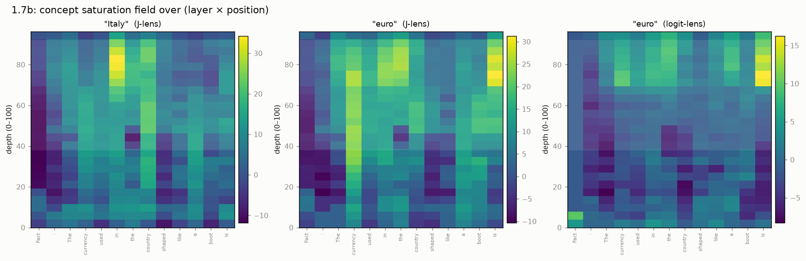
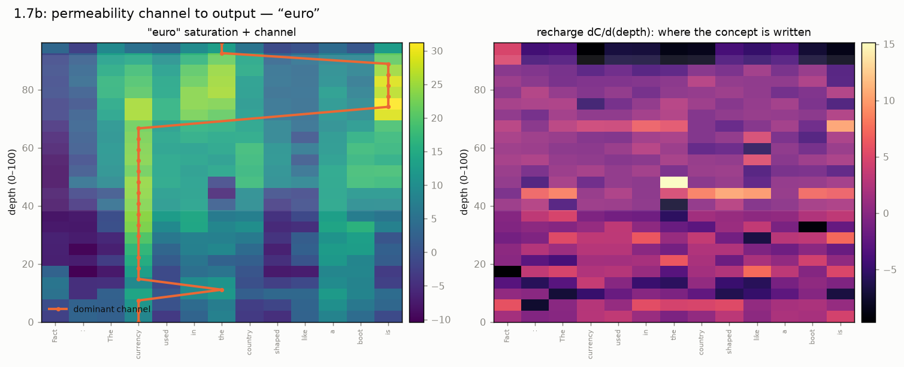

A reservoir-simulation view
The network has a natural 2D grid: layers (depth \(\ell\)) on one axis, token positions (\(p\)) on the other — a cross-section, like a reservoir model. This page reads the J-lens through that lens. It is a framing, not a claim that transformers are reservoirs; each mapping below is marked computable, partial, or metaphor.
The mapping
| Reservoir | Transformer |
|---|---|
| Cell (pressure, saturation) | activation \(h[\ell,p]\) at (layer, position) |
| Permeability / transmissibility | the weights: attention (position→position) + OV/MLP (read/write of directions) |
| Flowing fluid | a concept: the residual's component along a J-lens direction |
| Injector / producer well | a source token (where a concept enters) / the output position |
| Advection | attention moves a concept between positions |
| Accumulation | the residual connection: each layer adds to the stream |
| Adjoint / sensitivity | the Jacobian \(\partial h_\text{final}/\partial h_\ell\) — exactly a history-matching adjoint |
Key correction: the weights are not the cells — they are the transmissibility between cells. The cells are the activations.
Saturation field
How much of a concept each cell holds, \(C[\ell,p]=\langle J_\ell h[\ell,p], W_U[t]\rangle\).

The answer concept "euro" (middle) forms a bright vertical streak on the
currency column and concentrates at the output token — a visible channel. The
logit-lens field (right) is far dimmer through the mid-network: without the
Jacobian transport it reads the residual in the wrong basis.
Permeability channel to the output
The dominant route from source token to producer, and the recharge (write-rate \(dC/d\ell\)) — which cells pump the concept into the residual highway.

At 1.7B the "euro" concept sits on the currency column through the workspace
band, then transfers to the output token near the top — a clean channel with
recharge concentrated in a few mid-layer bands.
Concept flow

Multiphase analogies
The residual stream carries many concepts at once (superposition) through the same weights — so the multiphase-flow vocabulary transfers surprisingly well.
- Absolute permeability (computable) — the raw conductance of a head/MLP path; the sensitivity map above.
- Relative permeability \(k_r\) (computable) — concepts share a finite bandwidth. Attention softmax weights sum to 1, a hard partition of a head's "flow budget" among source positions, exactly like saturations summing to one. \(k_r^c=\) the fraction of an edge's flux carried by concept \(c\), as a function of its saturation; concepts compete (\(k_r^A\) falls as \(k_r^B\) rises = interference), and a concept below threshold stays "connate" (never crosses the softmax). Plottable as \(k_r(S)\) curves per head.
- Fingering / channeling (partial) — no literal Saffman–Taylor interface,
but the consequences map: concepts advance along high-permeability streaks
(the
currencycolumn), break through early, and bypass other cells. A concept sharply aligned with the output head has high "mobility" and breaks through in fewer layers. Measurable as a per-concept breakthrough depth and a channeling index. - Injector well (computable — this is activation steering) — adding a concept's direction to the residual at a chosen cell is an injector. It is what the causal swap does, and the paper's directed-modulation experiments. One can visualize the sweep: inject at a cell and watch the concept advect and rise to the output.
Injector, worked: rerouting the country → currency channel
The J-space appears to hold a relational manifold [country] → [currency].
The two-hop probe "the currency of the boot-shaped country is the ___" travels
it: boot → Italy → euro. If we inject a different country at the "Italy"
node — adding its J-lens direction across the workspace band, in place of
Italy's — the flow should run down the same country→currency channel and emit
that country's currency. It does (Qwen3-1.7B, scripts/inject.py):
| injection at the "Italy" node | model's top-1 output |
|---|---|
| (baseline) | euro |
| Italy → United States | dollar |
| Italy → Japan | yen |
| Italy → Russia | rub(le) |
| Italy → India | ru(pee) |
| Italy → France | euro (unchanged — France really does use the euro) |
The France row is the control: the channel does not "break", it routes correctly. This relational rerouting is present already at 1.7B — more evidence that the J-space's causal structure emerges before its readout sharpens.
Why this framing
For a reservoir-engineering audience it makes the interpretability concrete;
and each analogy above corresponds to a real, runnable experiment
(scripts/reservoir_field.py, permeability.py, causal_swap.py), not just
a picture. The \(k_r(S)\) curves and injector-sweep figures are the natural
next artifacts.